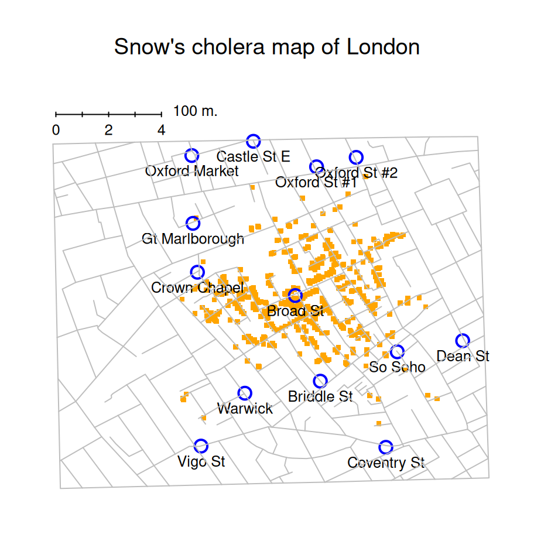
15. Visualising Data
Above all else show the data.
–Edward Tufte, The Visual Display of Quantitative Information, 2001
Visualising data is one of the most important tasks facing the data analyst. It’s important for two distinct but closely related reasons. Firstly, there’s the matter of drawing “presentation graphics”: displaying your data in a clean, visually appealing fashion makes it easier for your reader to understand what you’re trying to tell them. Equally important, perhaps even more important, is the fact that drawing graphs helps you to understand the data. To that end, it’s important to draw “exploratory graphics” that help you learn about the data as you go about analysing it. These points might seem pretty obvious, but I cannot count the number of times I’ve seen people forget them.
To give a sense of the importance of this chapter, I want to start with a classic illustration of just how powerful a good graph can be. To that end, the figure below shows a redrawing of one of the most famous data visualisations of all time (courtesy of Michael Friendly’s HistData package): John Snow’s 1854 map of cholera deaths. The map is elegant in its simplicity. In the background we have a street map, which helps orient the viewer. Over the top, we see a large number of small dots, each one representing the location of a cholera case. The larger symbols show the location of water pumps, labelled by name. Even the most casual inspection of the graph makes it very clear that the source of the outbreak is almost certainly the Broad Street pump. Upon viewing this graph, Dr Snow arranged to have the handle removed from the pump, ending the outbreak that had killed over 500 people. Such is the power of a good data visualisation.
The goals in this chapter are twofold: firstly, to discuss several fairly standard graphs that we use a lot when analysing and presenting data, and secondly, to show you how to create graphs in R.
With that in mind, the structure of this chapter is as follows: I’ll start out by giving you a very quick overview of how graphics work in R. I’ll then discuss several different kinds of graph and how to draw them, as well as showing the basics of how to customise these plots. I’ll then talk in more detail about R graphics, discussing some of those complicated and boring issues.
1 R graphics
Reduced to its simplest form, you can think of R graphics like a painting. You start out with an empty canvas. Every time you use a graphics function, it paints some new things onto your canvas. Later you can paint more things over the top if you want, layering new information over the old. This way of thinking about plotting data is referred to as the painter’s model - the key thing to keep in mind is because the plot is constructed sequentially, the order in which you do things matters.
We can extend the painting metaphor a little. If you want to paint a picture, you need to paint it on something. In real life, you can paint on lots of different things. Painting onto canvas isn’t the same as painting onto paper, and neither is the same as painting on a wall. In R, the thing that you paint onto is called a graphics device. In RStudio, the default graphics device is RStudioGD and it corresponds to the “plot” pane. If you were using the basic R program for Windows (i.e., R.exe) the default device is windows, on the Mac application (R.app) it’s called quartz, etc. However, from the computer’s perspective there’s nothing terribly special about drawing pictures on screen, and so R is quite happy to paint pictures directly into a file. R can paint several different types of image files: jpeg, png, pdf, postscript, tiff and bmp files are all available as graphics devices and you can write plots directly to those using those1
Secondly, when you paint a picture you need to paint it with something. Maybe you want to do an oil painting, but maybe you want to use watercolour. And, generally speaking, you pretty much have to pick one or the other. The analog to this in R is a “graphics system”. A graphics system defines a collection of graphics commands about what to draw and where to draw it. Something that surprises most new R users is the discovery that R actually has several mutually incompatible graphics systems. The two of most interest to us are the base graphics system that comes with R and the ggplot2 system2 that forms part of tidyverse. There’s quite a difference of opinion among R users about the relative merits of these two systems. You can get started in base graphics really easily. To see just how easy it is, let’s load a new data set and try to draw a picture.
2 The data set
The frames data set comes from a simple experiment I ran a little while ago (it’s experiment two from this paper). What we were interested in was understanding how people use statistical information to guide inductive inferences. For example, suppose you observe a sample of “robins” that have “plaxium blood” (whatever that is). How likely is it that “sparrows” will possess plaxium blood? Or “cows”? Does it matter how many robins you have seen? Does it matter whether you specifically selected robins and they turned out to have plaxium blood (category sampling) as opposed to detecting animals with plaxium blood that then turned out to all be robins (property sampling)? In that paper we had a computational model of inductive reasoning that made specific predictions about how the sample size (number of robins) and sampling method (property or category) would inflence people’s judgments.
In this particular experiment we didn’t show people animals (though we have done those too!) we just showed them small “alien rocks” called “sodor spheres”, and asked people to make guesses about new rocks of different sizes: test_loc values of 1 and 2 were very similar to the items they were shown during training, whereas value 7 was quite dissimilar. The number of training observations ranged from 2 (sample_size = "small") to 12 (sample_size = "large") and was varied within-subject. So everyone saw two observations, made some generalization judgments (response on a scale from 0 to 9), then saw more training observations and so on. Participants were randomly assigned to a "property" sampling condition or to a category sampling one. We also recorded age, gender, and assigned each person a unique id. So here’s the data
frames <- read_csv("./data/frames_ex2.csv")
frames# A tibble: 4,725 × 8
id gender age condition sample_size n_obs test_item response
<dbl> <chr> <dbl> <chr> <chr> <dbl> <dbl> <dbl>
1 1 male 36 category small 2 1 8
2 1 male 36 category small 2 2 7
3 1 male 36 category small 2 3 6
4 1 male 36 category small 2 4 6
5 1 male 36 category small 2 5 5
6 1 male 36 category small 2 6 6
7 1 male 36 category small 2 7 3
8 1 male 36 category medium 6 1 9
9 1 male 36 category medium 6 2 7
10 1 male 36 category medium 6 3 5
# ℹ 4,715 more rowsUsing the tools from the last section, let’s also create a smaller summary data frame that contains one row per person:
frames_small <- frames %>%
group_by(id, gender, age, condition) %>%
summarise(response = mean(response))`summarise()` has regrouped the output.
ℹ Summaries were computed grouped by id, gender, age, and condition.
ℹ Output is grouped by id, gender, and age.
ℹ Use `summarise(.groups = "drop_last")` to silence this message.
ℹ Use `summarise(.by = c(id, gender, age, condition))` for per-operation
grouping (`?dplyr::dplyr_by`) instead.frames_small# A tibble: 225 × 5
# Groups: id, gender, age [225]
id gender age condition response
<dbl> <chr> <dbl> <chr> <dbl>
1 1 male 36 category 5.33
2 2 male 46 category 7.05
3 3 female 33 property 4.86
4 4 female 71 property 3.86
5 5 female 23 property 9
6 6 female 31 category 7.90
7 7 male 23 property 3.76
8 8 female 31 property 4
9 9 female 37 category 3.38
10 10 female 46 category 5.86
# ℹ 215 more rowsLet’s see if we can understand what’s going on with this data set by drawing pictures, and also learn about R graphics in the process.
3 Histograms
When analysing the data from this kind of experiment, one of the first things I check is that the age and gender variables are actually irrelevant. Honestly, I only bother to measure them at all because people seem to expect it in the literature but for the kind of questions I care about there’s never any effects of age or gender. Still, you have to check just to make sure nothing weird is goind on.
With that in mind, let’s give ourselves the task of drawing a histogram of the age variable in this data frame. We don’t need to make it pretty, we just want to plot the frequency distribution for the number of points scored by the home team. As I mentioned earlier, we could do this using base graphics or we could do it the tidyverse way. Let’s see how it plays out both ways.
The function to do this in base graphics is called hist and here it is:
hist(frames_small$age)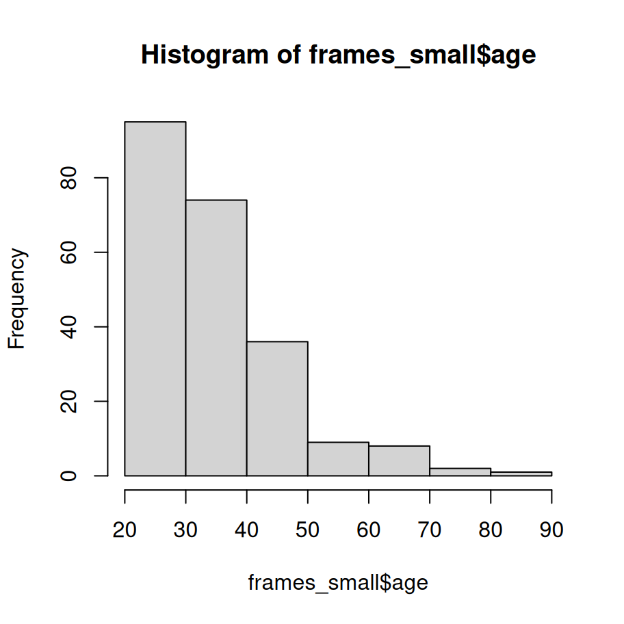
It’s not exactly pretty – though it’s way nicer than the default plots that I remember seeing when I was younger – but it gets the job done.
Okay, how do I create a histogram the tidyverse way? Much like base graphics, ggplot2 recognises that histograms are such a fundamentally useful thing that there exists a “geom” (a term I’ll explain in a moment) for them, but there’s no way to draw a plot without going through a somewhat more convoluted process:
frames_small %>%
ggplot(aes(x = age)) +
geom_histogram()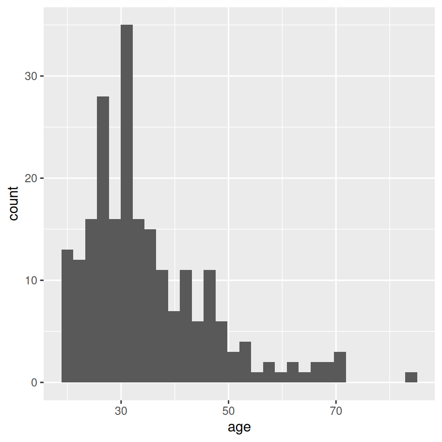
The output is prettier, admittedly, but our goal here wasn’t to be pretty. Our goal was to be simple. For this comparison, the tidyverse approach is not as straightforward as base graphics.
Where the tidyverse versions shines is when we want to do something a little bit more complicated. Suppose I wanted two histograms side by side, plotting the age distribution separately by condition. In base graphics, it’s a little cumbersome. What I have to do here is manually control the “layout” of the plot, dividing it into two separate panels and then drawing the histogram separately into each panel. That gives me code that looks like this:
layout(matrix(1:2, 1, 2))
hist(frames_small$age[frames$condition == "category"])
hist(frames_small$age[frames$condition == "property"])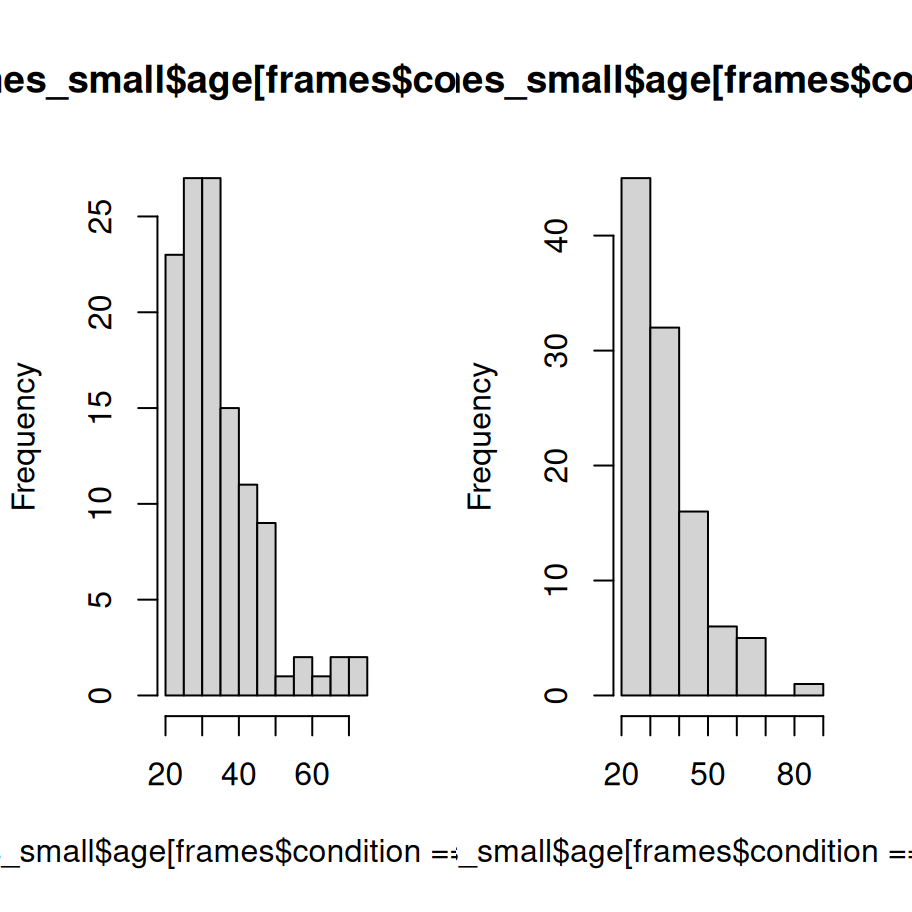
I need a lot more code as I did for the original version and I’ve ended up with an ugly plot. Of course, base graphics absolutely does allow me to do a better job than this, but I hope you can see that it will take quite a bit of effort to turn this into something readable.
What about the ggplot2 version? It turns out that it’s extremely easy. Splitting an existing plot into “facets” is a basic operation within ggplot2 so all I need to do is add one line of code that specifies which variable to use to make the facets! The result is actually kind of nice:
frames_small %>%
ggplot(aes(x = age)) +
geom_histogram() +
facet_wrap(~condition)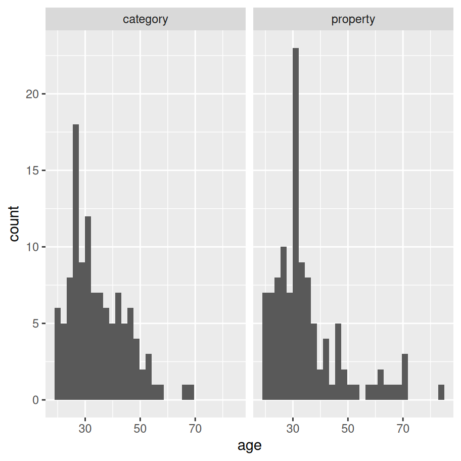
For me at least, this is the big advantage to the ggplot2 approach. There’s a certain amount of effort required to construct the basic plot, but once that is done, you can modify or manipulate that plot in an extremely flexible fashion with very little effort indeed. What I’ve found in practice is that the low-effort to making changes makes me much more willing to “play around” with different ways of visualising the data. So, while I’ll admit that there are some situations where I resort to using base graphics (mostly when I have a very unconventional graph to draw), I tend to find the tidyverse approach works better in the majority of cases.
As far as what the data visualisation is telling us: the distribution of ages was mostly in the 20-40 age range with a modest positive skew. That’s pretty typical of these studies. More importantly, it’s pretty clear from inspection that there’s not much of a difference in the age distribition across conditions, which is what I’d hope to see given that people were assigned randomly.
4 Scatter plot
The second kind of plot I’ll talk about is a scatter plot, in which each observation is drawn as a point, and the graph shows the values on one variable against the values on another. It’s such a simply plot that I’ll use it as a mechanism to illustrate the key ideas in ggplot2.
Lets build our plot piece by piece. The data we want to use here come from frames_small, so the first thing we’ll do is pipe this data set to the ggplot() function and see what it produces:
frames_small %>%
ggplot()In retrospect that’s unsurprising. Although we’ve passed the data to ggplot(), we haven’t told R what it ought to do with these data, so the output is simply a blank canvas! To make some progress, the next step is to specify a mapping for the plot that will tell R something about what roles the different variables play. In ggplot2 these mappings are described as a set of “aesthetics”, defined using the aes() function. There are many different aesthetics that can be used, but for a scatter plot the only things we really need to specify as aesthetics are the variable on the x axis and the variable on the y axis. So if we wanted to plot y = response against x = age, this is the mapping we would need:
frames_small %>%
ggplot(mapping = aes(x = age, y = response))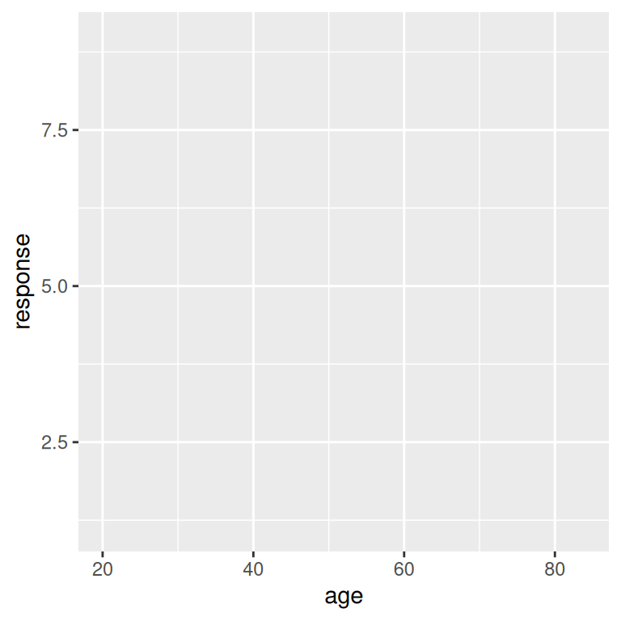
Hm. That’s clearly some progress. The canvas now has the axis labels and gridlines reflecting the fact that R now knows which variables we’re hoping to ploy. However, we still don’t have any data, because we haven’t told R what it should do to render the data. This is the role played by geoms, which specify different ways in which data can be displayed. Since we’re trying to draw a scatter plot, I’m going to use the simplest possible geom function, namely geom_point(). All it does is draw a dot for each data point:
frames_small %>%
ggplot(mapping = aes(x = age, y = response)) +
geom_point()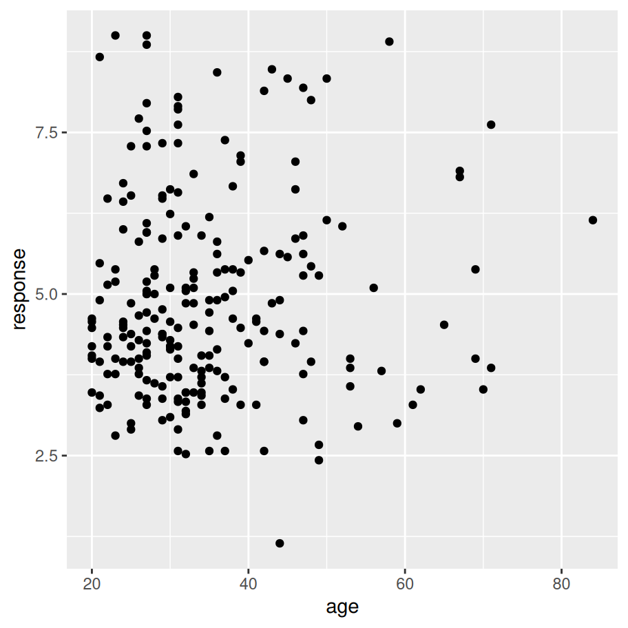
Now we have our scatter plot! From visual inspection there doesn’t seem to be any strong relationship between the age of a participant and the response they give. Again, that’s not surprising, but useful to check.
It’s worth highlighting the different roles played by aesthetics and geoms. For instance, I could have expanded the list of aesthetics to include colour = condition, which would indicate that the colour of each dot should indicated which condition the participant in question was assigned to:
frames_small %>%
ggplot(mapping = aes(x = age, y = response, colour = condition)) +
geom_point()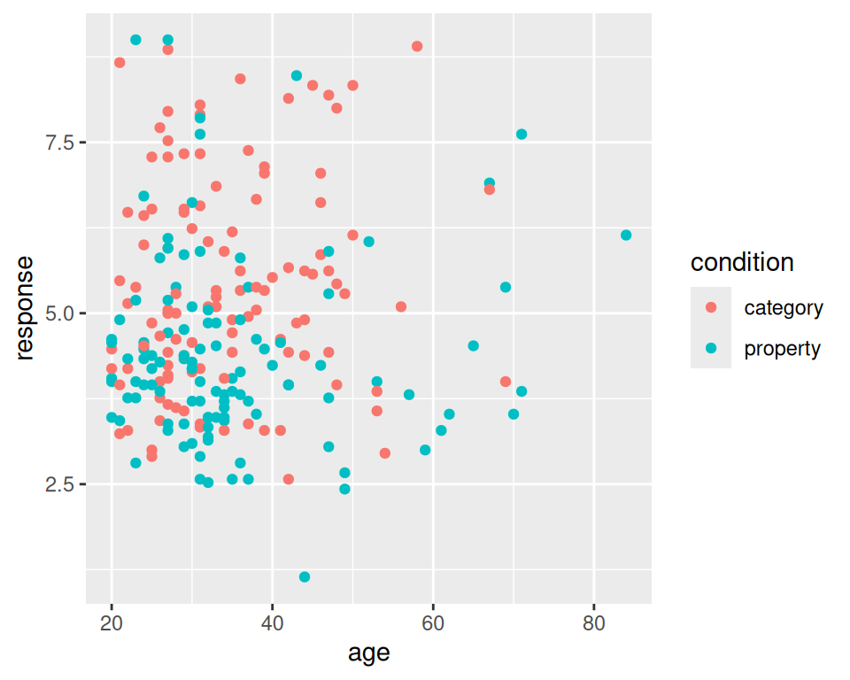
However, I can also add new geoms that will draw new layers to the plot. For example, geom_rug adds a visual representation of the marginal distribution of the data on both axes, like this:
frames_small %>%
ggplot(mapping = aes(x = age, y = response, colour = condition)) +
geom_point() +
geom_rug()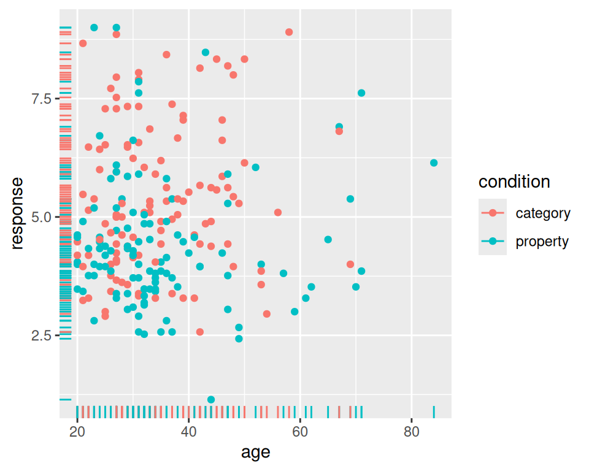
Notice the style here. A pretty typical way to build a visualisation is to construct it in layers, adding new geoms, aesthetics and other plot customisations as you go. So you’ll often end up with code structured like this:3
DATA %>%
ggplot(aes( LIST_OF_AESTHETICS )) +
A_GEOM +
ANOTHER_GEOM +
ETCIn any case, looking at these scatter plots there’s nothing that immediately suggests and differential patterns of responding as a function of age but there is a hint that responses are lower in the property sampling condition (blue) than in the category sampling condition (red).
5 Bar graphs
The humble bar graph is a staple in the scientific literature, and can be rendered by ggplot2 with the assistance of the geom_bar() function. Suppose I want to check that the gender distribution for this study was relatively even across conditions.4 To do that, I’ll set up my mapping with gender on the x-axis (using ggplot to initialise the plot and aes to specify the aesthetics), create separate panels for each condition (using facet_wrap which I’ll explain in more detail below), and then use geom_bar() to draw the plot:
frames_small %>%
ggplot(aes(x = gender)) + # set up the mapping
facet_wrap(~condition) + # split it into plots
geom_bar() # add the bars!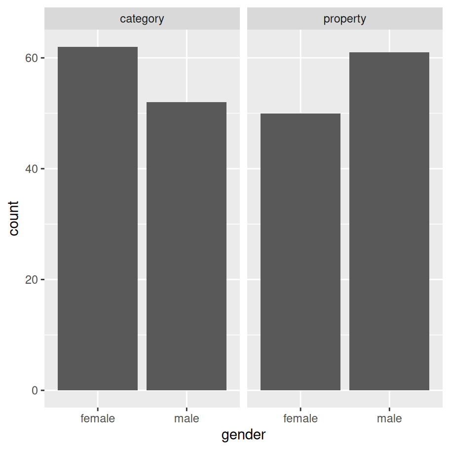
As one would expect for random assignment there’s a little unevenness but not very much. That looks totally fine to me, and at this point I’ve convinced myself that the age and gender variables really don’t matter very much, so I can start digging into the details about how the manipulated variables of theoretical interest (sample_size, condition and test_loc) relate to the inductive generalisation response judgment that people make…
6 Box plots
Another classic data visualisation used in psychology is the box plot (due to John Tukey), which presents a schematic representation of the distribution of responses. Box plots can be drawn in many different forms, but the most conventional version the median value (50th percentile) as a thick horizontal line, contained within a box that spans the range from 25th percentile to the 75th percentile. Above and below the box are the “whiskers” which extend to cover the full range of the data (after excluding outliers). Outliers are plotted as individual dots. Note that in this context an outlier is conventionally defined as a point that lies more than 1.5 times the interquartile range from the median: this is often a convenient heuristic to use but it’s not magical. Don’t read too much into the fact that a data set includes outliers!
To construct a boxplot using ggplot2 all we need to do is add a geom_boxplot() to the graph. So if I want to plot the distribution of response values across participants (averaged across test items) separately for each condition, I could do this:
frames_small %>%
ggplot(aes(x = condition, y = response)) +
geom_boxplot()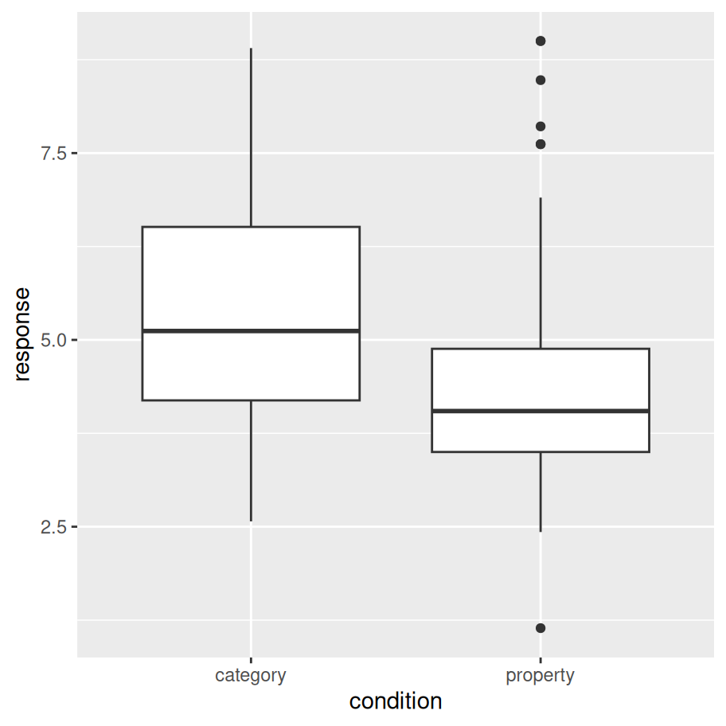
This plot is easy to interpret and provides our first hint that there is in fact something of interest going on in these data. On a first pass, it rather looks like people are less willing to make inductive generalisations (i.e., give lower scores) in the property sampling condition than in the category sampling condition!
7 Violin plots
Although the box plot is an old method for visualising the key characteristics of distribution it’s a very good one. It’s visually simple, meaning that you can put a lot of box plots in a single graph without causing too much clutter, yet it still conveys a lot of information about the distribution. So there are many situations in which they are worth including (we’ll see a good example in a moment)
On the other hand, for the specific situation here where there are only two disributions to be displayed, it does seem like we could do better. With the state of computing having advanced quite dramatically over recent decades, it is extremely easy to construct more complicated kernel density estimates of the shape of the population from which the sample is drawn. The violin plot provides a method for visually displaying a kernel density estimate. If we switch from geom_boxplot() to geom_violin() the resulting plot looks like this:
frames_small %>%
ggplot(aes(x = condition, y = response)) +
geom_violin()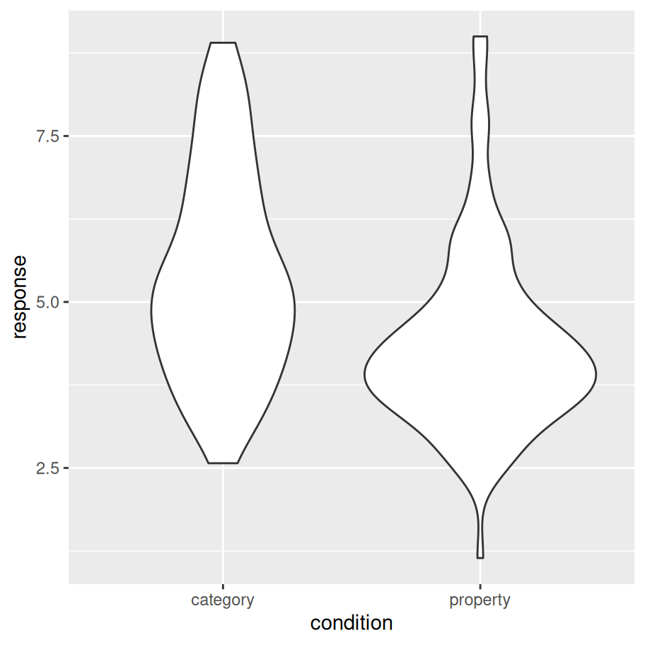
It’s intuitively obvious what this plot is doing: the “width” of the violin5 at each point shows the estimated “density” of the population distribution at that point. To make it a little clearer what this is showing, let’s overlay the raw data on the plot, using the geom_jitter() method to make it a little easier to see:
frames_small %>%
ggplot(aes(x = condition, y = response)) +
geom_violin() +
geom_jitter()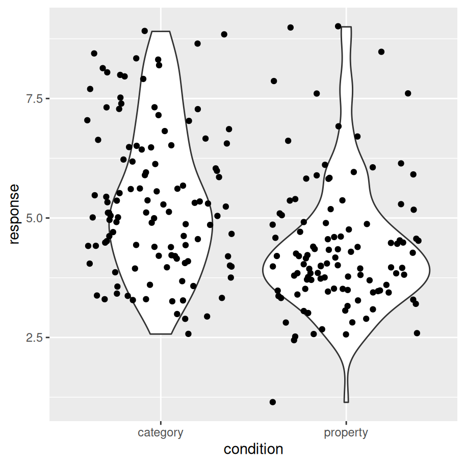
As you can see, in the property sampling condition the data are concentrated pretty tightly around 4.5, whereas in the category sampling condition the data are shifted upwards and spread out. That’s what produces the different shapes in the violin plots.
8 Facetted plots
The big problem I have with the data visualisations we’ve drawn so far is that we’re really not getting a very fine grained story. When we constructed the response variable for the frames_small data frame we averaged over all three values of sample_size and across all seven values of test_loc. That’s fine as a first pass if we want to take a quick look at the difference across condition, but in real world data analysis we need to hold ourselves to higher standards! So lets go back to the raw frames data, and see if we can find a better visualisation. This brings us naturally to the topic of faceting a plot…
A common task in data visualisation is to construct facet plots that display an existing plot separately for each group. We’ve seen this twice already, once in the histogram at the start of this section and previously in the prelude. In both cases I used facet_wrap() to do the work, using the ~ operator to specify a one-sided formula (e.g., ~condition). This function splits the plot by the levels of a factor, and then “wraps” them around to keep the plot tidy. For example, if there were 16 levels of the condition variable then facet_wrap() would probably give us a 4x4 grid.
If you want more precise control over the faceting, an alternative approach is to use facet_grid(). For instance, let’s suppose I want to draw separate boxplots for the response variable for every possible test_item, broken down by condition and sample_size. That’s going to give us 42 boxplots, so some degree of care is required here! Here’s my first attempt:
frames %>% # start with the full data set!
ggplot(aes(
x = factor(test_item), # treat "test_item" as categorical
y = response)) + # y variable is "response"
facet_grid(sample_size ~ condition) + # add faceting
geom_boxplot() # oh, right... add the boxplots :-)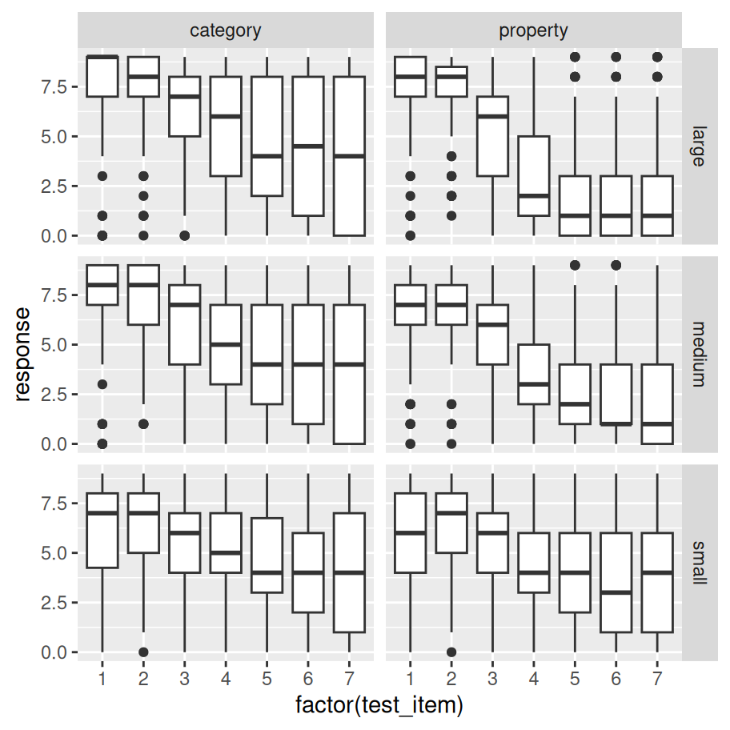
That’s not bad as a first pass. There’s a few things I’d like to do to tidy it though:
- Flip the grid by changing the formula to
condition ~ sample_size - Reorder the sample size facets by changing
sample_sizeto a factor - Adding nicer axis labels using
xlab()andylab() - Make the “outliers” less obtrusive using transparency
To do this, the first thing I’m going to do is use dplyr::mutate – discussed in the previous section – to convert the sample_size variable to a factor, and make sure the levels are specified in the order I want them to appear in the plot:
frames <- frames %>%
mutate(sample_size = factor(sample_size, levels = c("small","medium","large")))Now my command to draw the plot looks like this:
frames %>%
ggplot(aes(
x = factor(test_item),
y = response)) +
facet_grid(condition ~ sample_size) + # reversed faceting
geom_boxplot(outlier.alpha = 0.1) + # alpha sets the transparency
xlab("Location of Test Stimulus") + # add x-label
ylab("Response") # add y-label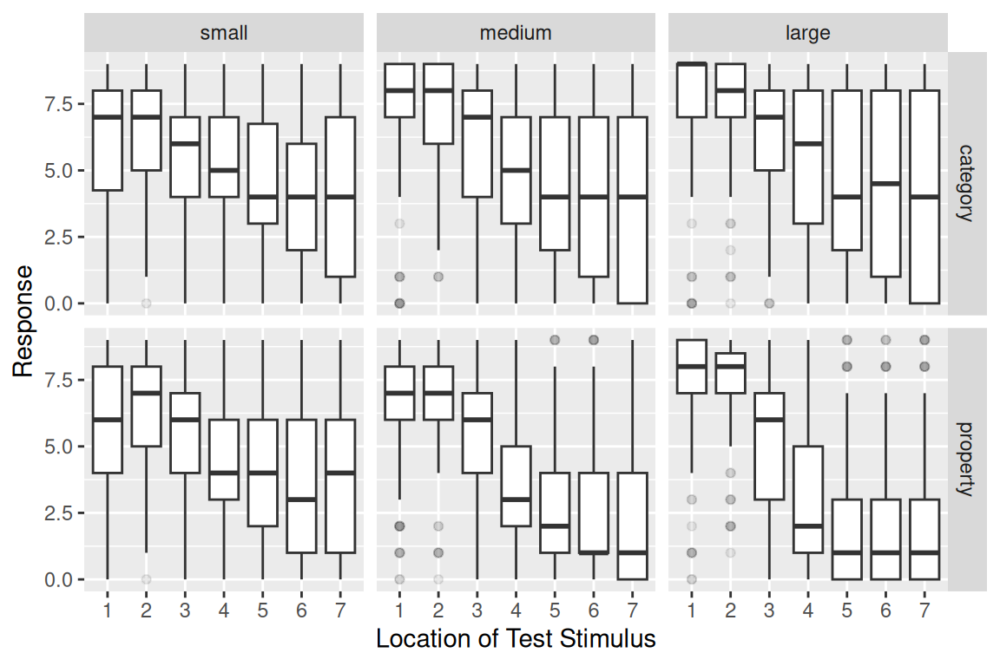
It’s essentially the same as before, but we’ve switched the ordering of variables in facet_grid(), added the outlier.alpha = 0.1 argument to geom_boxplot() to make the outliers fade into the background, and then specified some nicer axis titles. The resulting plot is a fair bit more readable.
As for what we’re seeing in the data, there are a few different things to notice:
- Within every facet the responses tend to shift downwards from left to right: as the test item becomes less similar to the training items, people are less willing to make generalisations. This pattern of similarity-based generalisation is unsurprising and it’s a finding that has been replicated many, many times in the literature.
- The effect of sample size is inhomogeneous. For stimuli that are very similar to the training items (test locations 1 and 2), increasing the sample size pushes the generalisation upwards, regardless of whether category sampling or property sampling is applied
- For stimuli that are very dissimilar (especially test items 6 and 7), the effect of sample size depends on the sampling method. For category sampling, basically nothing happens: the box plots for large sample sizes aren’t any different to those for small sample sizes. Yet for property sampling, there’s a systematic tendency for these to shift downwards
Assuming that these findings replicate6 it looks like we have a three-way interaction of some kind!
To be honest though, I’m still not pleased with this graph. I think we can do better.
9 Bubble plots
One difficulty with box plots is that they only work as distributional summaries when the data are unimodal. If most people respond with extreme values, the box plot ends up being a little misleading. Violin plots are often better at capturing multimodality, but they’re designed to work for continuous variables and often behave poorly when applied to data that fall in a small number of ordered categories. Psychological data from questionnaires or – as in the frames data set - other ordinal response methods often have exactly this characteristic. Neither box plots nor violin plots are ideally suited to this situation.
Fortunately a bubble plot can help out here. This takes the form of a scatter plot, but instead of plotting every data point as a unique dot, we plot dots at every location whose size (area) is proportional to the number of cases at that location.7 To do this with ggplot2 all we need to do is use the geom_count() function. When applied to the frames data, we get this:
frames %>%
ggplot(aes(x = test_item, y = response)) +
facet_grid(condition ~ sample_size) +
geom_count()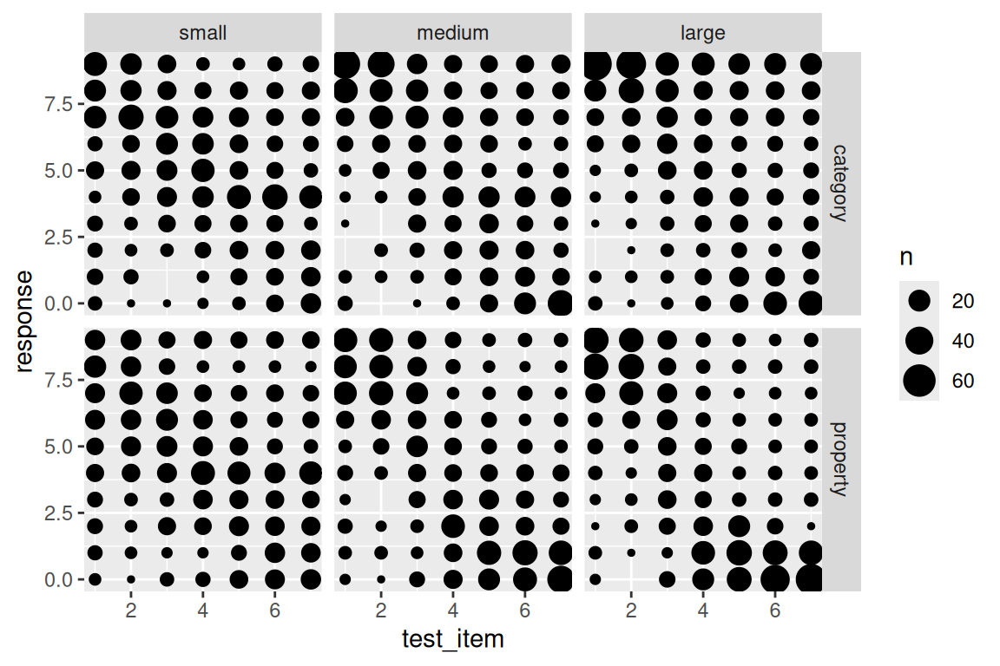
This version of the plot highlights a failure of the box plot version. Compare the distribution of responses to test item 7 in the category sampling condition (top row). In the small sample size, the modal response is 4, with most people using the middle category, whereas for the large sample size most people are using the extremes, responding with either 0 or 9. However, both cases have the same median and very similar inter-quartile ranges, so the box plots look almost the same!
On the other hand, this plot is a little hard to read. We’ve added a lot of new detail about the low frequency responses and in doing so learned more about the overall distribution of responding, but that’s come at the cost of making it harder to see what the most typical responses are! A compromise that I am often fond of is using shading to slightly de-emphasize the low frequency cases. Larger bubbles should stand out (dark colour), but low frequency responses should fade into the light grey background. It’s actually pretty easy to do that: geom_count() keeps track of the number of observations in each cell, and so we can add a new aesthetic to the geom_count() layer, simply by specifying colour = ..n..:
frames %>%
ggplot(aes(x = test_item, y = response)) +
facet_grid(condition ~ sample_size) +
geom_count(aes(colour = ..n..))Warning: The dot-dot notation (`..n..`) was deprecated in ggplot2 3.4.0.
ℹ Please use `after_stat(n)` instead.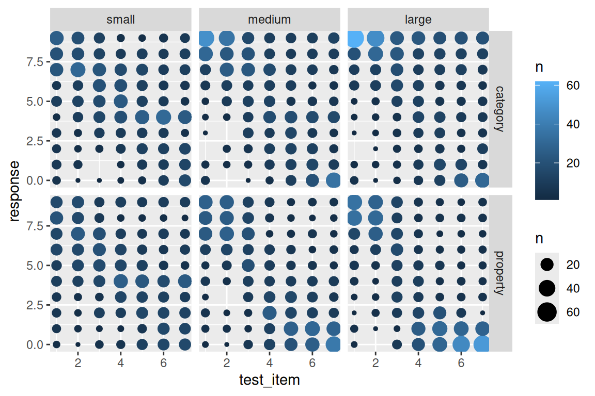
That’s a little nicer, but in this case I don’t want or need the pretty blue colouring. What I want to do is specify my own grey scale, where larger dots are coloured closer to black (e.g., upper bound is "grey20") and the smaller dots are coloured in a light grey (e.g., lower bound is "grey80").8 Then all I have to do is this:
frames %>%
ggplot(aes(x = test_item, y = response)) +
facet_grid(condition ~ sample_size) +
geom_count(aes(colour = ..n..)) +
scale_colour_gradient(low = "grey80", high = "grey20")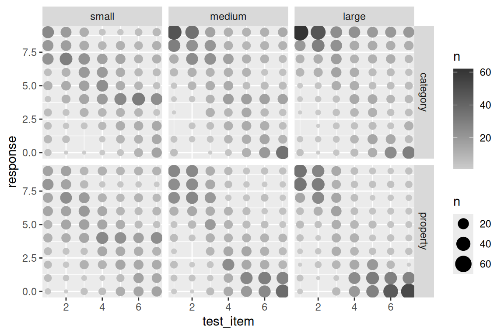
To my mind that’s much more readable! It captures the multimodality of the responding without overwhelming the viewer with too much detail. There are still some issues that you might want to care about in real life – the figure is a little too low contrast for people with less than perfect vision, for instance. But it comes a lot closer to what we need.
10 Error bars
As much as I love the bubble plot above, academic journals often expect a more compressed representation of the data, especially when the manuscript you’re submitting involves a large number of experiments. It’s often the case that we want to summarise the data from a single condition using a “mean plus error bar” style plot. A common format is to plot the mean for every experimental condition and have error bars plotting the 95% confidence interval for the mean. To do that for the frames data, let’s begin by constructing a summary data set
frames_mean <- frames %>%
group_by(condition,sample_size,test_item) %>%
summarise(
mean_response = mean(response),
lower = lsr::ciMean(response)[1],
upper = lsr::ciMean(response)[2]
)`summarise()` has regrouped the output.
ℹ Summaries were computed grouped by condition, sample_size, and test_item.
ℹ Output is grouped by condition and sample_size.
ℹ Use `summarise(.groups = "drop_last")` to silence this message.
ℹ Use `summarise(.by = c(condition, sample_size, test_item))` for per-operation
grouping (`?dplyr::dplyr_by`) instead.frames_mean# A tibble: 42 × 6
# Groups: condition, sample_size [6]
condition sample_size test_item mean_response lower upper
<chr> <fct> <dbl> <dbl> <dbl> <dbl>
1 category small 1 6.07 5.55 6.59
2 category small 2 6.26 5.84 6.69
3 category small 3 5.87 5.50 6.24
4 category small 4 5.11 4.74 5.49
5 category small 5 4.55 4.12 4.99
6 category small 6 4.16 3.69 4.63
7 category small 7 3.98 3.44 4.52
8 category medium 1 7.32 6.85 7.78
9 category medium 2 7.17 6.80 7.54
10 category medium 3 5.98 5.54 6.42
# ℹ 32 more rowsIn this case I’m using the ciMean() function from the lsr package to compute the 95% confidence intervals. Just so that you can see how this function works – without all the additional complications from calling it within the summarise() operation – here’s a simple example. I’ll generate 20 numbers from a normal distribution with true mean 100 and true standard deviation 15 (following the convention used for IQ scores), and then use the ciMean() function to calculate a 95% confidence interval:
fake_iq <- rnorm(n = 20, mean = 100, sd = 15) # normally distributed data
lsr::ciMean(fake_iq) # 95% confidence interval 2.5% 97.5%
fake_iq 94.66814 106.4966So the lower variable in frames_mean is the lower bound on the 95% confidence interval, and upper is the upper bound. In any case, now that we have data in an appropriate format we can create the plot.
To add error bars is no more difficult than anything else in ggplot2. There is a geom called geom_errorbar() that will draw those for us. However, it does need some new information. In our previous graphs we’ve specifed three aesthetics at the beginning of our graphing exercise, namely x = test_item, y = mean_response and colour = condition. That works fine for geom_point() because doesn’t need anything else, but geom_errorbar() also needs to know which variables specify the ymin and ymax values that will be displayed in the error bars. If I wanted to, I could could include these aesthetics within the original call to ggplot() but I’ll do something a little different this time. Individual geoms can have their own unique aesthetics, so I can insert a new call to aes() within the geom_errorbar() call. Conceptually I find this neater, because it makes clear that ymin and ymax are aesthetics that apply to the error bars, but not to other geoms in the plot. Anyway here’s the command:
my_pic <- frames_mean %>%
ggplot(aes(x = test_item, y = mean_response, colour = condition)) +
geom_point() +
geom_errorbar(aes(ymin = lower, ymax = upper)) + # add the error bars!
facet_wrap(~sample_size)Hey, where’s my plot? Oh right… notice that I assigned the result to a variable called my_pic. Under the hood, my_pic is essentially a big list of information that specifies everything R needs to know to draw the plot. So if we want to see the plot, all we need to do is call print(my_pic) or plot(my_pic), or even more simply I can do this:
my_pic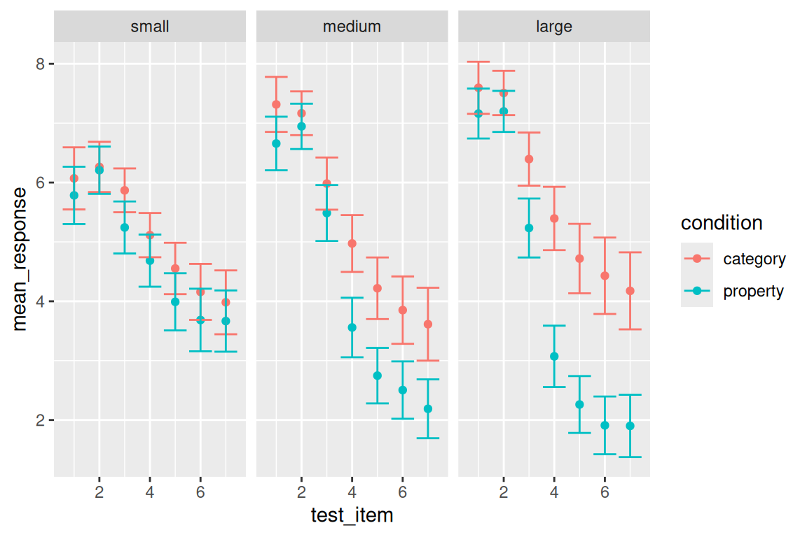
Clearly, when compared to the bubble plot we are losing a lot of information – all we have left is information about the distributional mean – but it’s still fairly informative about what is going on across the diferent conditions.
Another thing worth noting. Because the test items vary along a continuous scale, it’s appropriate to connect the points with lines. I can do this in a straightforward way simply by adding geom_line() to the plot:
my_pic + geom_line()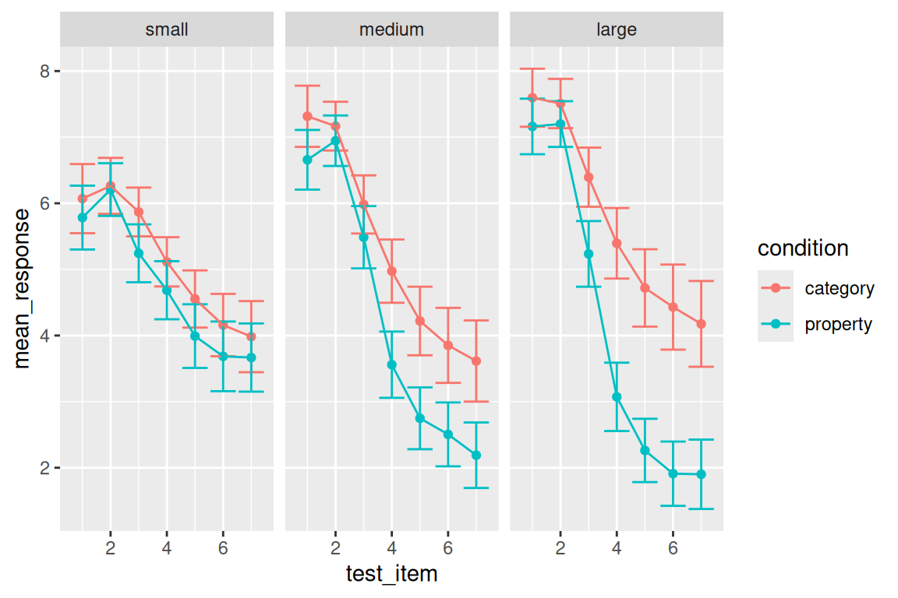
Notice that I can add geom_line() directly to my_pic. That can be extremely handy if you’ve worked out what the core features of your plot will be and want to play around with a few possible additions to the plot.
11 Other possibilities
As you can see, there are quite a few things you can do with this package. However, the ggplot2 package provides many more plotting tools than I’ve described so far, and it was designed to be extensible so there are many other packages that extend it in interesting ways. Even without looking at other packages, there are various neat possibilities. Just to give you a bit of a sense of this, here are a few more! If I want to add contouring to a scatter plot, I can do this using the geom_density_2d() function:
frames_small %>%
ggplot(mapping = aes(x = age, y = response, colour = condition)) +
geom_point() +
theme_bw() +
geom_density_2d() +
facet_wrap(~condition) +
ylim(0,9)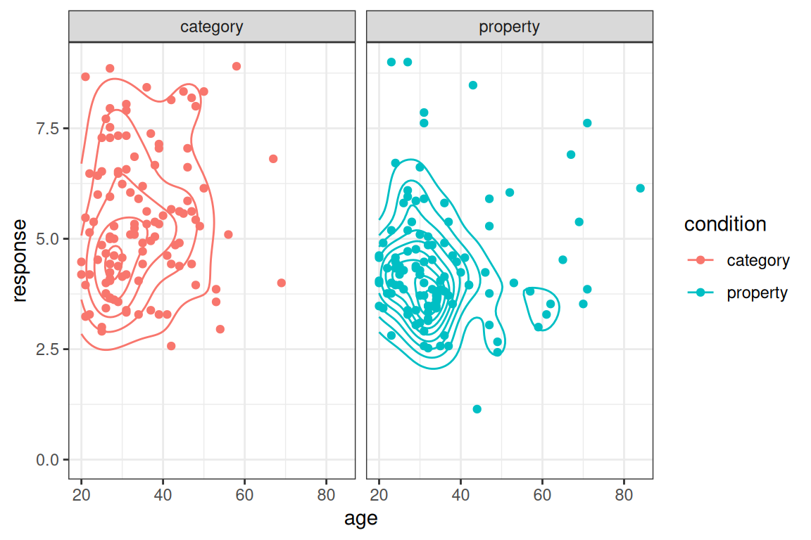
Alternatively, if I want to add regression lines to this plot I can use geom_smooth(). By default the geom_smooth() function applies a non-linear method (loess regression), which we saw previously in the prelude. This is also customisable. If I want to use a simpler linear model to provide my regression line, all I need to do is specify method = "lm" and I get a plot like this:
frames_small %>%
ggplot(mapping = aes(x = age, y = response, colour = condition)) +
geom_point() +
geom_smooth(method = "lm") +
facet_wrap(~condition) +
ylim(0,9)`geom_smooth()` using formula = 'y ~ x'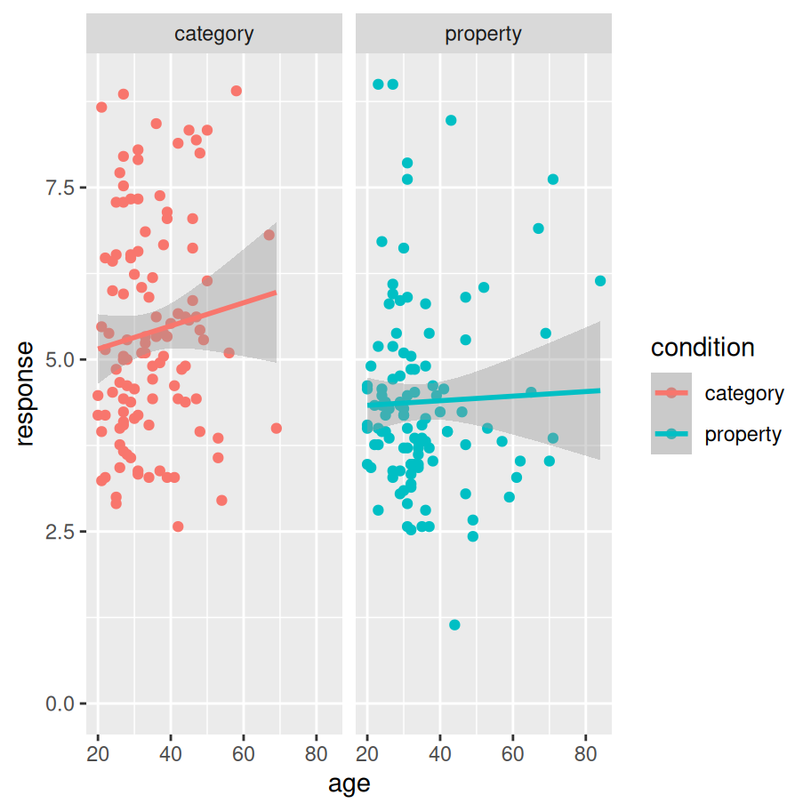
Similarly, plots are customisable in other ways. We can use theme_dark() to switch to a dark theme or theme_bw() to switch to a black and white scheme. We can add horizontal lines to plots with geom_hline(), vertical lines with geom_vline() and diagonal lines with geom_abline(). The colour palette can be adapted in arbitrary ways (e.g. with scale_color_brewer). We can control the axis scales with xlim() and ylim(). We can add text to a plot with geom_text(). Here’s an example showing some of those customisation:
my_new_pic <- my_pic +
theme_dark() +
scale_color_brewer(palette = "Pastel2") +
ylim(0, 9) +
geom_vline(xintercept = 2.5, colour = "white", lty = "dotted") +
xlab("Location of Test Stimulus") +
ylab("Mean Response")
my_new_pic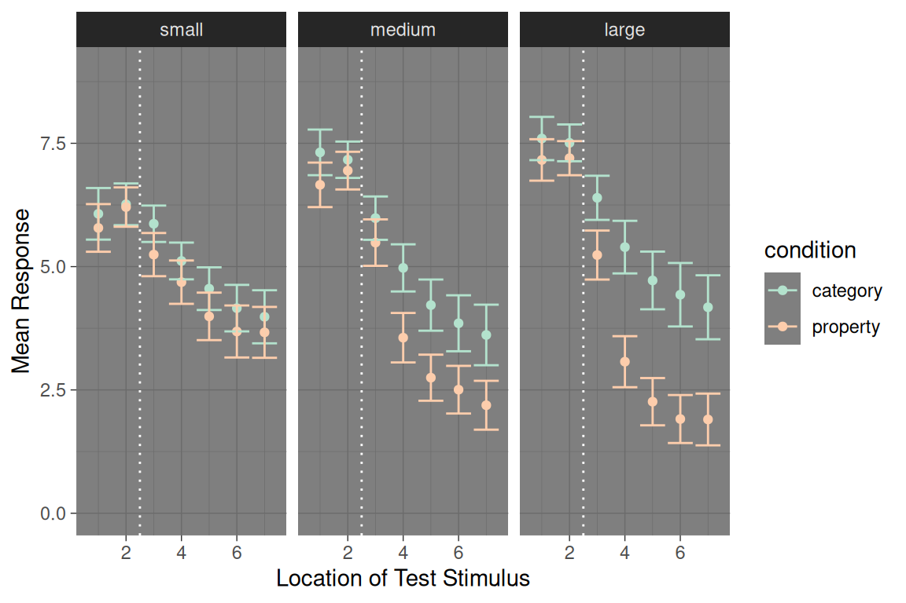
The possibilities are limited mostly by your imagination, and by common sense. The ggplot2 system is so rich and flexible that it’s easy to go overboard with creating pretty pictures. Always remember that there’s a human reader at the other end of your picture, and they’re more interested in what your data visualisation can tell them about the data, not what it says about your R skills! 😀
12 Saving images
The last topic I want to cover here is how to save your plot to an image file. Suppose I want to take my_new_plot and save it to a PNG file that is 16cm wide and 8cm high. The ggsave() function allows me to do that, and the command is pretty intuitive:
ggsave(
filename = "./output/frame_pic.png",
plot = my_new_pic,
width = 16,
height = 8,
units = "cm"
)The function is smart enough to guess from the filename argument what kind of image file to create (e.g., PNG, JPG, etc), and so as long as the filename specifies a file extension that ggsave() can handle it will automatically create the right kind of image. The result in this case is this image file.
{kind=link}
13 More resources
- https://www.r-graph-gallery.com/
Footnotes
If you are interested, take a look at the various
devfunctions for working with graphics devces, such asdev.new,dev.print,dev.offetc. I won’t talk about those here because I’m focusing on tidyverse but they’re handy in other situations↩︎It’s worth acknowledging that ggplot2 and builds off the grid graphics system that we very briefly encountered when using TurtleGraphics↩︎
There is a little bit of weirdness to this. Once you’ve gotten accustomed to using the pipe operator
%>%it starts to feel like we should be writing code likedata %>% ggplot() %>% geom() %>% etcrather thandata %>% (ggplot() + geom() + etc). This is purely for historical reasons: ggplot2 predates the pipe operator and so unlike everything else in tidyverse it’s not very compatible with%>%.↩︎In this study I asked people to respond with a three value questionnaire, with options for “male”, “female” and “other” as possible gender identities. I’m not entirely satisfied with this as a measurement method though, and the question wasn’t compulsory to answer.↩︎
Yeah, they never actually look like violins. We should just give up and call them blob plots↩︎
They appear to – we ran 9 experiments in total and while some effects are a little fragile and I wouldn’t put too much faith in their ability to replicate, the core effect in which there are systematic differences in how statistical information (e.g., sample size, base rate, auxiliary data) interacts with the sampling mechanism replicated every time; oh and if you go read the paper the model predictions correlate with human data very highly, always produce the same qualitative patterns regardless of parametre values… etc, etc. This isn’t a cognitive science paper so I won’t bore you with details, but the reason this works as cleanly as it does is that we didn’t choose these manipulations arbitrarily. We had a proper theory to guide us!↩︎
There are drawbacks to bubble plots. The psychophysical function for area isn’t linear, so subjective area doesn’t scale perfectly with actual area. If you need people to be able to make fine-grained comparisons between quantities don’t use bubble plots. However, my goal here is different - I don’t mind if we can’t quite see the “perfect” relationship, I just want the “gist” to come through properly.↩︎
R is quite flexible in how it handles colours. For most purposes you can use an English colour word and R will have a rough idea what you mean. Type
colours()at the console to see a list of the colour names it knows: there are a lot! Alternatively you can specify a hexadecimal string like#88398A, or use a function likergb()orhsv()to construct the colour you want.↩︎